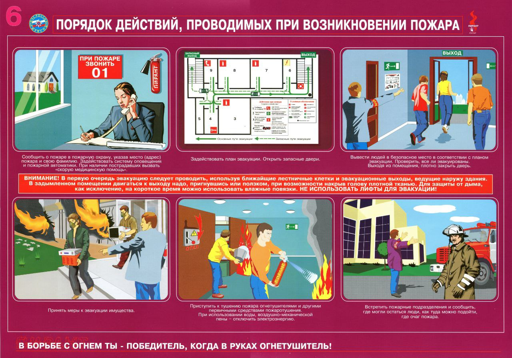
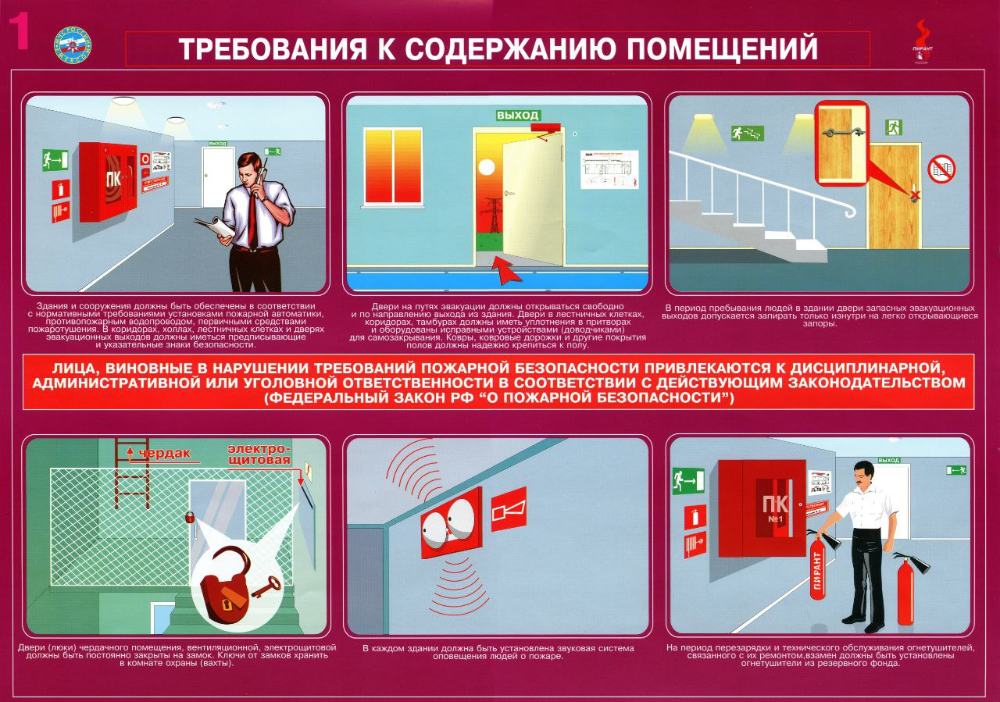
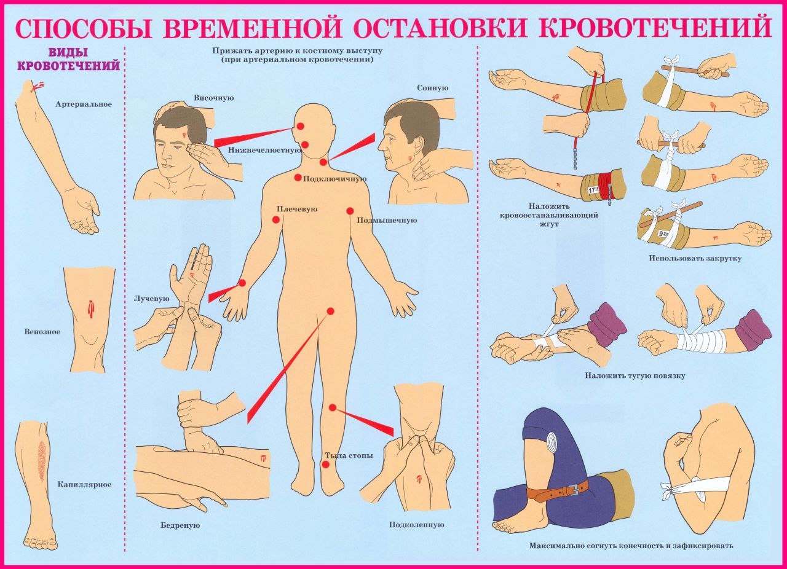
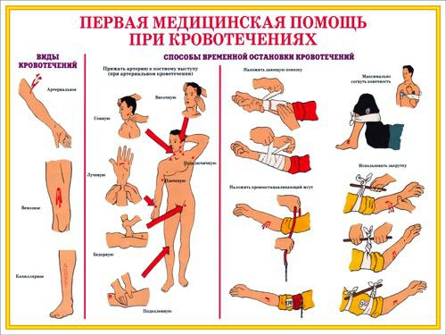
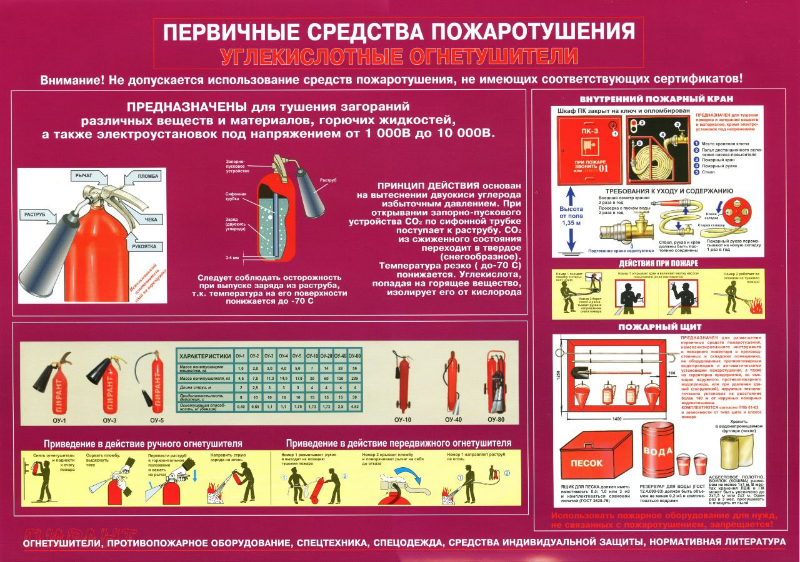
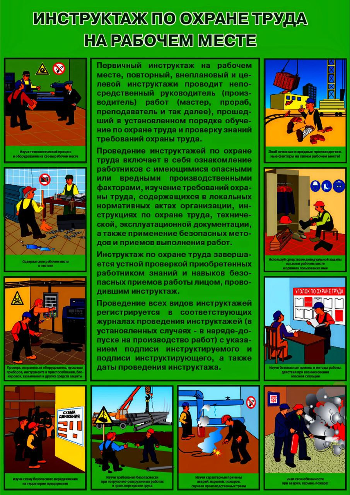
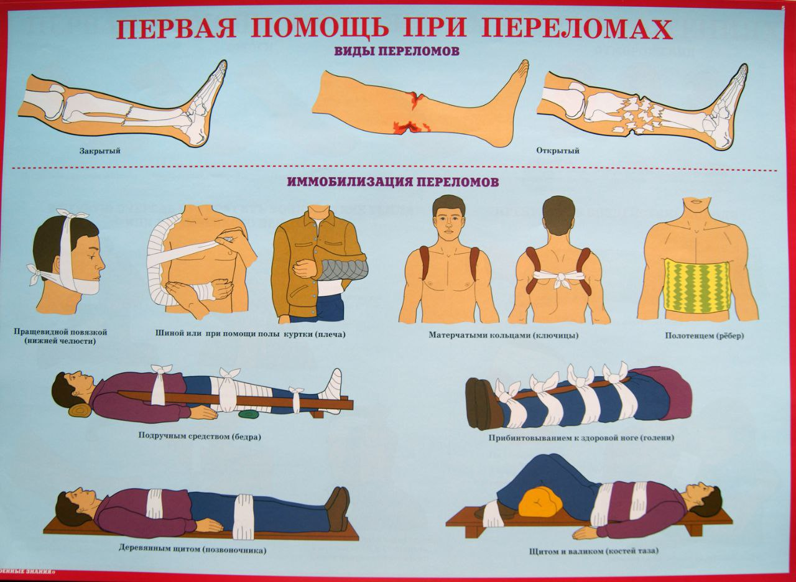

Ўзбекистонда меҳнат муҳофазаси (охрана труда) бўйича 72
соатли сертификат олиш курслари қонунчиликка мувофиқ
белгиланган тоифадаги ходимлар учун мажбурий ҳисобланади. ⚖️
«Меҳнат муҳофазаси тўғрисида»ги қонун ва Вазирлар Маҳкамаси
қарорларига асосан, 72 соатли ўқув курсларини қуйидаги
шахслар ўташлари шарт: Корхона, ташкилот ва муассасалар
раҳбарлари (бош директор, директор, раҳбар ва уларнинг
ўринбосарлари). Меҳнат муҳофазаси ва техника хавфсизлиги
учун масъул шахслар (инженерлар, меҳнат муҳофазаси бўйича
мутахассислар). Ишлаб чиқариш участкалари, цехлар, цех
бошлиқлари ва уларнинг ўринбосарлари. Хавфли ишларни амалга
оширадиган ходимлар раҳбарлари (газ, электр, қурилиш, кимё,
тоғ-кон, энергетика ва шунга ўхшаш соҳаларда). Меҳнат
инспекцияси ва касаба уюшмаларида меҳнат муҳофазаси билан
ишловчи мутахассислар. 📌 Оддий ишчилар учун эмас, балки
раҳбар ва масъул шахслар учун 72 соатли курс талаб этилади.
Оддий ишчиларга эса қисқа (18 соат, 36 соат) ўқув курслари
ташкил этилади.
Меҳнат муҳофазаси ва техника хавфсизлиги бўйича кириш
инструктажи — бу ишга янги қабул қилинган барча ходимлар,
стажёрлар, вақтинчалик ишчилар ва хизмат сафарида бўлган
шахслар учун иш бошлашдан олдин ўтказиладиган асосий
тушунтириш ҳисобланади. Унинг мақсади – ходимларни
корхонадаги умумий хавфсизлик қоидалари, меҳнат муҳофазаси
талаблари ва фавқулодда ҳолатлардаги ҳаракатлар билан
таништиришдир. 📑 Кириш инструктажи мавзулари (намунали
рўйхат): Корхона ҳақида умумий маълумотлар корхонанинг
тузилиши ва ҳудуди; асосий ишлаб чиқариш йўналишлари. Меҳнат
муҳофазаси қонунчилиги ишчи ва иш берувчининг ҳуқуқ ва
мажбуриятлари; қоидаларни бузиш учун жавобгарлик. Ички
меҳнат тартиби қоидалари иш вақти, дам олиш; тақиқланган
ишлар ва ҳаракатлар. Ишлаб чиқаришдаги зарарли ва хавфли
омиллар физик омиллар (шовқин, титраш, чанг, ҳарорат);
кимёвий моддалар (заҳарли, ёниувчан); электр ва механик
хавфлар. Ташкилот ҳудудидаги умумий қоидалар кириш-чиқиш
тартиби; бегона шахсларнинг кириши тақиқланиши.
Хавфсизликнинг умумий талаблари шахсий ҳимоя воситаларидан
фойдаланиш; асбоб-ускуналардан тўғри фойдаланиш;
носозликларни ўзбошимчалик билан бартараф этмаслик. Ёнғин
хавфсизлиги ёнғин чиқиш сабаблари; ўт ўчиргичлар жойлашган
жойлар; эвакуация қоидалари. Бахтсиз ҳодисаларда биринчи
ёрдам кўрсатиш жароҳат, куйиш, электр зарбасидаги
ҳаракатлар; тез ёрдам чақириш тартиби. Фавқулодда ҳолатларда
ҳаракат қилиш сигналлар, эвакуация режаси; раҳбариятни
хабардор қилиш тартиби. 📌 Кириш инструктажи якунида ишчига
савол-жавоб ёки тест ўтказилади. Натижалар "Кириш
инструктажи журнали"га қайд этилади ва инструктор ҳамда ишчи
имзо қўяди.
Шахсий ҳимоя воситалари (ШХВ) — бу ходимни иш жойидаги
зарарли ва хавфли омиллардан ҳимоя қилиш учун мўлжалланган
махсус воситалардир. Улар меҳнат муҳофазаси қоидаларига кўра
ишчига иш берувчи томонидан бепул берилиши шарт. 🛡 Шахсий
ҳимоя воситалари турлари 1. Бош ва юзни ҳимоя қилиш
воситалари Каска, шлем, ҳимоя қалпоқлари. Юзни ҳимоя қилувчи
ниқоблар, щитоклар. 2. Кўз ва қулоқни ҳимоя қилиш воситалари
Ҳимоя кўзойнаклари (шаффоф, фильтрли). Қулоқчинлар ва
берушлар (наушник, беруш). 3. Нафас олиш органларини ҳимоя
қилиш воситалари Марли ва махсус ниқоблар. Респираторлар.
Газ ниқоблари. 4. Қўлни ҳимоя қилиш воситалари Қўлқоплар
(резина, мато, металл, диэлектрик). Махсус нарсаларни
ушлашга мўлжалланган бостон қўлқоплар. 5. Оёқни ҳимоя қилиш
воситалари Махсус ботинка ва этиклар. Диэлектрик пойабзал
(электр хавфидан). Металл қопламали ботинка (оғир юкдан). 6.
Тана ва терини ҳимоя қилиш воситалари Спец кийимлар
(комбинезон, халат, жилет). Иссиқ ва совуқдан ҳимоя
кийимлари. Кислотага, щёлочга ва кимёвий моддаларга чидамли
кийим. 7. Баланчилик ва йиқилишдан ҳимоя воситалари
Хавфсизлик камари. Арқанлар ва қўшимча маҳкамлагичлар. 8.
Қўшимча воситалар Йўл-чора воситалари (жилет-отражатель).
Қўшимча изоляция воситалари (электр ишлари учун). 📌 ШХВ
ишчига иш турига мос равишда берилади ва уни тўғри ишлатиш
ишчининг шахсий мажбурияти ҳисобланади.
Жуда тўғри, каска шахсий ҳимоя воситалари ичида энг
асосийларидан бири ҳисобланади. ⛑ Каска – техника
хавфсизлигида шахсий ҳимоя воситаси 🎯 Асосий мақсади: Бошни
йиқилаётган буюмлардан, Синиқ, қурилиш материалларидан,
Электр хавфидан, Турли механик зарбалардан ҳимоя қилади. 🏗
Каскадан фойдаланиш жойлари: Қурилиш майдонлари; Тоғ-кон
ишлари; Электр энергетика объектлари; Завод, фабрика ва
цехларда; Ҳар қандай ишлаб чиқаришда, юқоридан хавфли
буюмлар тушиши мумкин бўлган жойларда. 🔧 Касканинг
талаблари: ГОСТ ёки миллий стандартга мувофиқ бўлиши керак.
Чўкиб кетмайдиган, зарбага чидамли материалдан тайёрланган
бўлиши шарт. Ички қисмида мавжут ёстиқча ва маҳкамлагич
бўлиши зарур. Диэлектрик каскалар электр мосламаларида
ишлашда ишлатилади. Рангига қараб вазифаси белгиланиши
мумкин: оқ — раҳбарлар, муҳандислар; сариқ — умумий ишчилар;
қизил — ёнғин хавфсизлиги ходимлари; кўк — электриклар ва
монтажчилар; яшил — меҳнат муҳофазаси ва хавфсизлик
хизматчилари. 📌 Ишчига қўйиладиган мажбурият: Каскани доим
иш вақтида кийиш; Каска бузилган, ёрилиб кетган бўлса,
алмаштириш; Устидан нарса қўймаслик, ишлатишдан олдин
тозалаш. Жуда яхши ✅ Қуйида сиз учун Шахсий ҳимоя
воситалари (ШХВ) бўйича жадвал тайёрлаб бердим. Унда асосий
восита, қўлланиладиган касб ва ҳимоя қиладиган хавфлар
кўрсатилган. 🛡 Шахсий ҳимоя воситалари (ШХВ) жадвали №ШХВ
номиҚайси касбларда қўлланиладиНимадан ҳимоя
қилади1КаскаҚурилишчи, электрик, тошқинчи, цех
ишчилариЮқоридаги буюм тушиши, зарба, электр хавфи2Ҳимоя
кўзойнагиСлесарь, токарь, заҳарли моддалар билан ишловчи,
электрикЧанг, учкун, метал парчалари, кимёвий моддалар3Ниқоб
/ респираторҚурилишчи, чилангар, кимёчи, чангли муҳитда
ишловчиЧанг, газ, заҳарли моддалар, ўткир ҳидлар4Газ
ниқобиКимё саноати, газчилар, ёнғин хавфсизлиги
ходимлариЗаҳарли газлар, буғлар5Қулоқчин / берушЗавод,
қурилиш, авиация, металл ишловчиШовқин, юқори даражадаги
овоздан6Қўлқоплар (резина, мато, металл,
диэлектрик)Электрик, чилангар, токарь, кимёчиЭлектр зарбаси,
кесилиш, кимёвий моддалар, юқори ҳарорат7Махсус пойабзал
(ботинка, этик)Қурилишчи, омборчи, металлург, электрикОғир
буюм тушиши, тайғоқ йўл, электр хавфи8Спец кийим
(комбинезон, халат, жилет)Барча ишлаб чиқариш
корхоналаридаКир, иссиқлик, ёниувчан моддалар, механик
таъсир9Юқори иссиқликдан ҳимоя кийимиМеталлургия, қазонхона
ишчилариЮқори ҳарорат, қизиқ металл парчалари10Совуқдан
ҳимоя кийимиСовуткич омборлари, қишда ташқи ишларСовуқ,
шамол, муз11Баланчиликка қарши хавфсизлик камариБаландликда
ишловчи (электрик, монтажчи, қурилишчи)Йиқилишдан ҳимоя12Йўл
хавфсизлик жилети (отражатель)Йўл ишчилари, авария
хизматлариМашина нуридан кўринмаслик хавфи13Изоляция
асбоблари (диэлектрик калош, қўлқоп, кийим)Электриклар,
энергетика соҳасиЭлектр токи таъсиридан14Ҳимоя щитки ва юз
ниқоблариЭлектросварка, металл кесувчиларУскунадан чиққан
ёруғлик, учкун, қизиқ металл парчалари
Elektr xavfsizligi** **Elektr xavfsizligi** — bu odamlarni
elektr toki, elektr yoylari, elektromagnit maydon va statik
elektrning xavfli ta’siridan himoya qilishga qaratilgan
tashkiliy va texnik choralar tizimidir. Asosiy
tushunchalar:** 1. **Elektr toki** — bu zaryadlangan
zarrachalarning (odatda — elektronlar) o'tkazgich orqali
harakati. 2. **Elektr toki bilan zararlanish** kuyish,
tirishish, yurak va nafas faoliyatining to‘xtashiga, hattoki
o‘limga olib kelishi mumkin. 3. **Kuchlanish (volt)** — tok
oqimining sababidir. 50 V dan yuqori (o‘zgaruvchan tok) yoki
120 V dan yuqori (doimiy tok) kuchlanish xavfli hisoblanadi.
4. **Yerga ulash (zazemleniye)** — qisqa tutashuv yoki
nosozlik paytida tokni yerga yo‘naltirish uchun uskuna yerga
ulanadi. 5. **UZO (tokdan himoya qiluvchi qurilma)** — tok
sizib chiqishi aniqlanganda avtomatik ravishda elektr
ta'minotini o'chiradi. --- Elektr xavfsizligini ta'minlash
choralari:** 1. Tashkiliy choralari:** * Elektr xo‘jaligi
uchun mas’ul shaxslarni tayinlash. * Xodimlarga yo‘riqnoma
va o‘quv mashg‘ulotlarini o‘tkazish. * Elektr qurilmalar
bilan ishlashga faqat o‘qitilgan xodimlarga ruxsat berish. *
Kuchlanish ostida yoki yaqin joyda ishlash uchun
ruxsatnomalar rasmiylashtirish. 2. Texnik choralari:** *
Himoya yerga ulash va nolga ulash tizimlaridan foydalanish.
* UZO va differensial avtomatlardan foydalanish. *
Dielektrik qo‘lqoplar, rezina gilamchalar, izolyatsiyalangan
dastakli asboblar bilan ishlash. * Elektr jihozlarini
muntazam texnik xizmat ko‘rsatish va nazoratdan o‘tkazish.
--- Elektr xavfsizligi bo‘yicha malaka guruhlari:** 1.
**I-guruh** — eng oddiy daraja, faqat asosiy
xavf-xatarlardan xabardorlik talab etiladi. 2. **II-guruh**
— kuchlanish ostidagi qismlarga bevosita tegmasdan ishlash
uchun. 3. **III-guruh** — 1000 V gacha bo‘lgan uskunalar
bilan ishlash, sxemalar va himoya choralarini bilish talab
etiladi. 4. **IV-guruh** — ishlarni tashkil etuvchi va
nazorat qiluvchi mutaxassislar uchun. 5. **V-guruh** — eng
yuqori daraja, 1000 V dan yuqori kuchlanishli qurilmalar
bilan ishlash uchun. Elektr toki urgan odamga birinchi
yordam:** 1. Tok manbasini darhol o‘chiring (tugma, vilkani
uzing va h.k.). 2. Bu mumkin bo‘lmasa — ta’sirlangan odamni
izolyatsiyalangan buyumlar (quruq tayoq, rezina qo‘lqop)
bilan ajrating. 3. Yurak urishi va nafas olishni tekshiring.
4. Nafas va/yoki yurak urishi bo‘lmasa — sun’iy nafas va
yurakni massaj qilish orqali reanimatsiya o‘tkazing. 5. Tez
yordam chaqiring.
ШХВ (шахсий ҳимоя воситалари)** — бу электр токи таъсиридан
ходимларни ҳимоя қилиш учун мўлжалланган махсус воситалар
бўлиб, улар электр ускуналари ва кучланиши юқори бўлган
объектларда ишлаш пайтида қўлланилади. Электробехатарликда
қўлланадиган асосий СИЗ турлари
: ШХВ (шахсий ҳимоя воситалари)** — бу электр токи
таъсиридан ходимларни ҳимоя қилиш учун мўлжалланган махсус
воситалар бўлиб, улар электр ускуналари ва кучланиши юқори
бўлган объектларда ишлаш пайтида қўлланилади.
Электробехатарликда қўлланадиган асосий СИЗ турлари: |
Категория | Вазифаси Мисоллар Изоляцияловчи СИЗ | Ток
ўтказувчи қисмларга тўғридан-тўғри тегишдан ҳимоя | -
Диэлектрик қўлқоплар
- Диэлектрик галош ва ботлар- Изоляцияловчи штангалар ва қисқичлар Изоляцияловчи қопламалар ва қалпоқлар | Ҳимоя кийимлари Электр ёрилиши (дуга), учқунлар, ёниб кетишдан ҳимоя - Ёнмайдиган матодан тикилган костюмлар
- Ихтисослаштирилган халат ва плашлар
- Учқундан ҳимояловчи қўлқоплар Бош, кўз ва юзни ҳимояловчи воситалар | Учқун, ёрилиш, парчалардан ҳимоя - Диэлектрик каскалар - Юз ниқоблари ва ҳимоя кўзойнаклари Баландликда ишлаш воситалари Электр узатиш линиялари яқинида баландликда ишлаш хавфини камайтириш - Ҳимоя камарлари Арқанлар ва карабиналар Назорат ва ўлчов асбоблари Кучланиш йўқлигини текшириш, ерга уланганлигини назорат қилиш Кучланиш кўрсатгичлари
- Мегаомметрлар
- Ток ўлчов қисқичлари | Электробехатарликда СИЗ учун талаблар: 1. **Меъёр ва стандартларга мувофиқ бўлиши** (ГОСТ, ТР ТС, ПУЭ, ПТЭЭП). 2. **Даврий текширув ва синовлардан ўтказилиши** (масалан, диэлектрик қўлқоплар — ҳар 6 ойда). 3. **Ходимларни ўқитиш** — СИЗдан тўғри фойдаланишни билиши шарт. 4. **Тўғри сақлаш ва ташиш** — изоляция хусусиятлари бузилмаслиги учун. --- Қўллаш мисоллари: 1000 В гача бўлган электр ускуналарида ишлаш**: диэлектрик қўлқоплар, кучланиш кўрсатгичи, изоляцияланган дастали асбоблардан фойдаланилади. 10 кВ кучланишдаги электр узатиш линияларида ишлаш**: изоляцияловчи штанга, диэлектрик каска, электр ёрилишига (дугага) қарши махсус кийим, галош, қўлқоплар.
| Категория | Вазифаси | Мисоллар |
|---|---|---|
| Изоляцияловчи СИЗ | Ток ўтказувчи қисмларга тўғридан-тўғри тегишдан ҳимоя |
- Диэлектрик қўлқоплар - Диэлектрик галош ва ботлар- Изоляцияловчи штангалар ва қисқичлар Изоляцияловчи қопламалар ва қалпоқлар |
| Бош, кўз ва юзни ҳимояловчи | | Учқун, ёрилиш, парчалардан ҳимоя | Диэлектрик каскалар - Юз ниқоблари ва ҳимоя кўзойнаклари |
| Баландликда ишлаш воситалари | Электр узатиш линиялари яқинида баландликда ишлаш хавфини камайтириш | Ҳимоя камарлари Арқанлар ва карабиналар |
| Назорат ва ўлчов асбоблари | Кучланиш йўқлигини текшириш, ерга уланганлигини назорат қилиш |
Кучланиш кўрсатгичлари - Мегаомметрлар - Ток ўлчов қисқичлари |
- Диэлектрик галош ва ботлар- Изоляцияловчи штангалар ва қисқичлар Изоляцияловчи қопламалар ва қалпоқлар | Ҳимоя кийимлари Электр ёрилиши (дуга), учқунлар, ёниб кетишдан ҳимоя - Ёнмайдиган матодан тикилган костюмлар
- Ихтисослаштирилган халат ва плашлар
- Учқундан ҳимояловчи қўлқоплар Бош, кўз ва юзни ҳимояловчи воситалар | Учқун, ёрилиш, парчалардан ҳимоя - Диэлектрик каскалар - Юз ниқоблари ва ҳимоя кўзойнаклари Баландликда ишлаш воситалари Электр узатиш линиялари яқинида баландликда ишлаш хавфини камайтириш - Ҳимоя камарлари Арқанлар ва карабиналар Назорат ва ўлчов асбоблари Кучланиш йўқлигини текшириш, ерга уланганлигини назорат қилиш Кучланиш кўрсатгичлари
- Мегаомметрлар
- Ток ўлчов қисқичлари | Электробехатарликда СИЗ учун талаблар: 1. **Меъёр ва стандартларга мувофиқ бўлиши** (ГОСТ, ТР ТС, ПУЭ, ПТЭЭП). 2. **Даврий текширув ва синовлардан ўтказилиши** (масалан, диэлектрик қўлқоплар — ҳар 6 ойда). 3. **Ходимларни ўқитиш** — СИЗдан тўғри фойдаланишни билиши шарт. 4. **Тўғри сақлаш ва ташиш** — изоляция хусусиятлари бузилмаслиги учун. --- Қўллаш мисоллари: 1000 В гача бўлган электр ускуналарида ишлаш**: диэлектрик қўлқоплар, кучланиш кўрсатгичи, изоляцияланган дастали асбоблардан фойдаланилади. 10 кВ кучланишдаги электр узатиш линияларида ишлаш**: изоляцияловчи штанга, диэлектрик каска, электр ёрилишига (дугага) қарши махсус кийим, галош, қўлқоплар.
Электробехатарлик бўйича 1-группа нима? 1-группа** — бу
**энг бошланғич даража** бўлиб, электротехникага алоқаси
бўлмаган ходимлар** учун мўлжалланган. Улар
**электроускуналар яқинида бўлиши мумкин**, лекин **улар
билан тўғридан-тўғри ишламайди**. Бу гуруҳ ходимнинг
**шахсий хавфсизлигини таъминлаш** учун керак бўлади. ---
Қандай касб эгаларига 1-группа берилади? Бу гуруҳ
қуйидагидек касблар учун керак бўлиши мумкин
❗ **Эътибор беринг:** 1-группага эга ходимлар: *
**Электроускуналарни таъмирлашга ёки қўшиб-ўчиришга ҳақли
эмаслар.** * Фақат **хавфсиз тарзда яқин жойда бўлишлари
мумкин.** --- ## 🔹 1-группага эга бўлган ходим нималарни
билиши керак? ### ✅ Билиши шарт: * Электр токи инсон учун
қанчалик хавфли эканини * Электр ускуналари яқинида ўзини
қандай тутиш кераклигини * Қандай ускуналарга тегиш мумкин
эмаслигини * Электр симлари шикастланса, учқун чиқса —
**нима қилиш кераклигини** * **Ток уришида биринчи ёрдам
кўрсатиш усулларини** * Қайси масъул шахсга ёки хизматига
хабар бериш кераклигини ### ❌ Билиши шарт эмас: * Электр
схемаларни, кучланиш ёки ток кучини * Электроускунани ўзига
хос тарзда ишга тушириш ёки таъмирлаш * Ҳар қандай техник
хизмат ёки текширувларни --- Хохласанг, **мини-тест**
ўтказишимиз ёки **1-группа бўйича эслатма** тузишимиз
мумкин. Давом этамизми?
| Касб / Лавозим | Нега керак? |
|---|---|
| Пол жуувчи, ҳовли супуришчи | Электроускуналар бўлган хоналарда тозалаш ишларини олиб боради |
| Қўриқчи (охранник | Электр жиҳозлари бор объектларни кузатад |
| Қўриқчи (сторож) | Электр щитлари ёки трансформаторга яқин жойда бўлади |
| Слесарь, сантехник | Электр тармоқлари бўлган объектларда ишлайди |
| Маляр курувчи | Очиқ электропроводка яқинида ишлаши мумкин |
| | Офис ходимлари | Агар меҳнат муҳофазаси қоидалари талаб қилса |
Махсус пойафзал (СИЗ) Ўзбекистонда Сиз "спец обувь"
Ўзбекистон контекстида ўзбек тилида сўрагандингиз. Бу
жавобни сизга тақдим этаман. Асосий атама: Махсус пойафзал
ёки ҳимoya пойафзали. Бу ишчиларнинг оёқларини хавфли
омиллардан (уроклар, тирнақлар, кислоталар, электр тоги,
иссиқлик ва ҳоказо) химоя қилиш учун ишлатиладиган ишчи-хом
ашёсидир. Ўзбекистонда сотиб олиш ва топиш учун Ўзбекистонда
махсус пойафзални сотиб олишнинг бир неча йўли бор: 1.
Махсус дўконлар ва дилерлар: · Тошкент ва бошқа катта
шаҳарларда СИЗ (ҳимоя воситалари) ва унинг бир қисми бўлган
махсус пойафзал сотиладиган кўпдан-кўп дўконлар мавжуд. ·
Қидириш учун калит сўзлар: махсус пойафзал, иш пойафзали,
ҳимоя пойафзали, СИЗ дўкони Тошкент, спецобувь Узбекистан.
2. Онлайн-дўконлар ва маркетплейслар: · Uzum.uz, Olcha.uz,
Epood.uz каби платформаларда турли брендларнинг махсус
пойафзалларини топиш мумкин. · Қидириш учун: ўша ўзбекча
калит сўзлардан фойдаланинг. 3. Ишончли бренд ва ишлаб
чиқарувчилар: · Ўзбекистонда жойидаги (мас., "Ўзпойафзал"
каби) ишлаб чиқарувчилар ишлайди. · Халқаро брендлар (мас.,
Jallatte, Safety Jogger, Dr. Martens Industrial,
СтанкоИнвест, Красный Треугольник) Ўзбекистон бозорида кенг
тарқалган ва уларнинг расмий дилерлари мавжуд. Махсус
пойафзал турлари (типологияси) Махсус пойафзал химоя
қиладиган хавфга қараб турлича бўлади. Ўзбек тилида уларнинг
номлари: · Проколга қарши пойафзал (Проколостойкая) -
Тиккан-тирнақлардан химоя қилади. · Зарбга қарши пойафзал
(Ударопрочная) - Оғир нарсалар тушганида оёқ бармоғини
сақлайди. Бунда пойафзалнинг мўғида мустаҳкам металл ёки
композит капсула бўлади. · Сирпанишга қарши пойафзал
(Противоскользящая) - Силжимас подош. · Электр тогидан
химояловчи пойафзал (Диэлектрическая) - Резинадан ишланган,
изоляция қилади. · Иссиқликка чидамли пойафзал
(Термостойкая) - Юқори иссиқликда ишлаш учун. · Кислота ва
щёлочга чидамли пойафзал (Кислотощелочестойкая) - Химиявий
моддалардан химоя қилади. · Қишқи махсус пойафзал - Иссиқ,
зимма-зим бўлади. Қандай танлаш керак? Иш joyидаги
хавф-хатарларни аниклаб, шуга мос келадиган махсус
пойафзални танлаш лозим. Ҳар қандай хўжжият (корхона) ўз
ишчиларига Меҳнат кодексига мувофиқ бундай пойафзални бепул
таъминлаш мажбурияти бор. Умуман олганда, Ўзбекистонда
махсус пойафзал бозори ривожланмоқда ва халқаро
стандартларга (ГОСТ, ISO) мос келadigan кўпгина ишончли
моделларни топиш мумкин.
Шовқиндан химоя қилувчи наққошлар (СИЗ) ва меҳнат
хавфсизлиги Ўзбекистонда Сиз шовқиндан химоя қилувчи
қулоққоплар (наушники) ва меҳнат хавфсизлиги ҳақида ўзбек
тилида маълумот сўрадингиз. Мана, батафсил жавоб. Асосий
атамалар (Терминлар) · СИЗ наққошлар: Шовқиндан химоя
қилувчи қулоққоплар (Шовқиндан химояловчи қулоққоплар) ·
Техника безопастности / Меҳнат хавфсизлиги: Меҳнат
хавфсизлиги · Шум / Шовқин: Шовқин Шовқиндан химоя қилувчи
қулоққоплар турлари 1. Пассив химоя қилувчи қулоққоплар
(қулоққоплар): · Қулоқ тугунчалари (Вкладыши): "Беруши" деб
ҳам аталади. Силикон ёки момақайдидан ишлаб чиқарилади. ·
Қулоқ чангаклари (Накладки): Бош суюги атрофидаги тўсиқлар.
Энергияни ютадилар. · Камонак қулоққоплар (Затылочные): Орқа
томондаги камонак билан богланади. 2. Фаол (электрон) химоя
қилувчи қулоққоплар: · Фаол шовқин бостиргич: Тashqi
шовқинни аниклайди ва унга қарама-қарши сигнал яратиб, уни
бостиради. Суҳбатни эшитиш имкониятини сақлаб қолади. Меҳнат
хавфсизлиги талаблари Ўзбекистонда Ўзбекистонда меҳнат
хавфсизлиги "Меҳнат кодекси" ва "Меҳнатни мухофаза қилиш
тўғрисида"ги қонунлар билан тартибга солинади. Иш
берувчининг мажбуриятлари: 1. Хавфни баҳолаш: Иш жойидаги
шовқин даражасини ўлчаш ва хавфни аниклаш. 2. СИЗ бериш:
Агар шовқин даражаси рўйхаттан ўтган меъёрлардан (80-85 дБА)
ошса, ишчиларга бепул шовқиндан химоя қилувчи қулоққоплар
bilan ta'minlash. 3. Ўқитиш: Ишчиларга шовқиннинг зарари ва
СИЗ-дан тўғри фойдаланиш усуллари ҳақида маълумот бериш. 4.
Медицик кўрикдан ўтказиш: Ишчиларнинг эшитиш қобилиятини
мунтизам текшириб туриш. Қандай танлаш керак? · Шовқин
даражаси: Шовқин қанчалик юқори бўлса, химоя коэффициенти
(SNR немоча NRR) шунчалик юқори бўлиши керак. · Қулайлик:
Ишчи уни доим кийиши керак. Агар ноқулай бўлса, у кийишни
инкор этади. · Иш шароити: Иссиқ-совуқ, намлик, бошқа
хавфларга нисбатан чидамлилиги. · Сертификат: Қулоққоплар
Ўзбекистонда ёки халқаро (CE, ANSI) стандартларига мос
келиши керак. Ўзбекистонда сотиб олиш манбалари · Махсус
дўконлар: Тошкент ва бошқа катта шаҳарларда СИЗ сотиладиган
дўконлар мавжуд. "Меҳнат хавфсизлиги воситалари", "СИЗ
дўкони" деб излаш керак. · Онлайн-дўконлар: Uzum.uz,
Olcha.uz каби платформаларда халқаро брендларнинг (3M,
Peltor, Honeywell) маҳсулотларини топиш мумкин. · Тижорат
кўргазмалари: Меҳнатни мухофаза қилиш воситалари бўйича
кўргазмалар ўтказилиб туради. Хулоса: Ўзбекистонда иш
берувчилар шовқинли иш жойларида ишчиларининг саломатлиги
учун жавобгардир ва уларга меҳнат хавфсизлигини таъминлаш,
шу жумладан шовқиндан химоя қилувчи қулоққоплар bilan
ta'minlash мажбуриятини олиб бориши керак.






